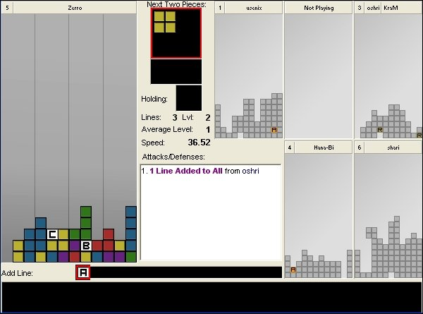

Tetrinet est un Tetris en ligne multi-plateformes. Tetrinet peut se jouer jusqu’à 6 sur un même match, en équipe ou non, un serveur possédant de nombreux salons. Le jeu est un concept de puzzle qui demande d'emboîter des blocs aux formes diverses. Ce Tetris possède toutefois des particularités amusantes, des blocs spéciaux aux effets variés, bonus ou malus.
La référence, Tetris, est un jeu vidéo fort célèbre, il fut développé en 1985 par un russe, Alexei Pajitnov. La version TetriNET date de 1997, livrée par un auteur du nom de St0rmCat, c'est de la première version que nous parlerons ici, même si une version TetriNET2 ainsi que d'autres variantes moins populaires existent.
Voilà un petit guide pour la prise en main de ce jeu, autant pour les bases que les astuces ou stratégies avancées. Même si ce tutoriel s’adresse bien plus à ceux qui démarrent sur le jeu, peut être que les habitués des soirées Tetrinet y trouveront quand même à grappiller une ou deux nouvelles choses.
On appelle client le logiciel qui permet d'accéder au serveur. Pour Tetrinet, le client est ici généralement composé de plusieurs panneaux : Client settings pour les configurations d'accès, Show Fields pour le champ de jeu, Partyline pour la ligne de discussion et les statistiques de fin de partie, Misc.settings pour la configuration du jeu, et cetera.
Le client de base actuel est la version TetriNET 1.13, client utilisé pour les soirées du SDZ. La page suivante donne aussi un client pour Linux, GTetrinet, un bon client, il peut aussi déjà se trouver dans les packages par défaut.
TetriNET 1.13 est le client recommandé par les organisateurs des soirées organisées par le SDZ, sûrement par souci d'équité et de sécurité. La compatibilité est bonne sous Linux, mais ce client ne donne pas suffisamment de choix de réglages, quelque soit la plateforme. A noter aussi que le démarrage d'une partie se fait en retard de quelques secondes, par rapport aux autres clients, ce qui est fort préjudiciable, surtout quand on connaît l'importance de l'entame du round.
L'un des clients alternatif le plus performant ce jour est Blocktrix 0.71 version Beta, il peut simuler la version TetriNET 1.13, une version Tetrifast ? Absence de délai d'attente entre deux blocs ? Et un mode spectateur Tspec, pour simplement observer un match. La version Tetrifast équivaut à du cheat sur les serveurs courants, et ne doit être utilisée que sur les serveurs dévolus à ce mode de jeu. Sur Blocktrix, Il est possible de régler la sensibilité des touches au delà des configurations générale de l'ordinateur, afin d'atteindre une bonne rapidité de jeu. La sensibilité va aussi avec le risque d'erreurs. Notez aussi la possibilité de pouvoir envoyer directement vos blocs aux extrémités droites et gauche de votre terrain de jeu ! Malgré toutes ces formidables options, Blocktrix est un client de jeu tout à fait accepté pour TetriNET, le délai d'attente entre deux blocs étant le même que pour les autres clients.
En dehors du serveur mis à la disposition des zéros, au cours des soirées organisées par le site, on peut trouver d'autres serveurs, beaucoup ne sont pas disponibles en permanence, il y a autrement des références, sur lesquelles on trouve assez régulièrement du monde. Je vous en donne deux principaux ci dessous, l'adresse est à remplir sur le panneau Client Settings de votre client.
Tetridome.com : un serveur avec de nombreuses options et un système de crédits virtuels, permettant de personnaliser son champ de jeu, d'obtenir un sous domaine ou son propre channel. Les joueurs sont nombreux le soir, heure française. On y trouve des joueurs du SDZ et des francais.
Tetrinet.de : un serveur assez sommaire, on peut y croiser parmi les meilleurs joueurs, l'avantage de ce serveur est de pouvoir trouver du monde le matin, pour qui veut. Le niveau des joueurs là-bas est plutôt élevé.
En arrivant sur un serveur Tetrinet, différents salons de jeux sont disponibles, un salon est aussi appelé channel. L'utilisation des commandes est sensiblement la même que sur le serveur mis à disposition lors des soirées du site du zéro. Les commandes suivantes sont utilisées dans la boîte de dialogue du panneau PartyLine :
/help : pour obtenir une liste descriptive des différentes commandes du serveur.
/list : pour obtenir une liste des différents salons de jeu.
/join #NomDuSalon ou /join NuméroDuSalon : pour rejoindre un salon ou channel de jeu.
/start N : pour démarrer une partie avec un décompte, N étant généralement un chiffre compris entre 3 et 10.
/Move X Y : pour changer la position des joueurs, X et y correspondant aux numéros de ceux-ci.
/Who : pour obtenir une liste des différents joueurs connectés.
Il est aussi possible de faire tourner son propre serveur TetriNET, quelques modules sont proposés par Tetrinet.org, allez voir sur cette page si vous êtes connaisseur.
Oui, osons rappeler que la base du jeu est d'empiler différents blocs, de différentes formes, afin qu'ils s'emboîtent parfaitement, la création d'une ligne complète, sur la largeur du terrain, efface celle ci et fait apparaître un bonus. Voici ci-dessous les différents blocs disponibles, avec de gauche à droite, le T, le carré, le S, le Z, le L, le J et la barre.
Les blocs sont soumis à l'action de la gravité, mais leur chute est généralement accélérée par le joueur lui-même, voir même provoqué instantanément par un « drop piece » classiquement configuré sur la touche espace du clavier. Les blocs proposés peuvent subir une rotation complète, et dans n'importe quel sens, ce qui est indispensable pour trouver la bonne forme à emboîter. Vous perdez si le niveau des blocs empilés dépasse la hauteur de votre champ de jeu, de même si le bloc qui doit arriver sur votre terrain n'a pas la place d'apparaître. Une petite partie suffira pour saisir le concept.

Ci-joint un screenshot de l'interface générale retrouvée au niveau du panneau de jeu du client, le kit graphique n'est pas celui fourni par défaut.
Notez que la réalisation de plusieurs lignes d'un même coup ajoute des lignes à tous vos adversaires, les poussant plus rapidement vers la défaite. Ces lignes sont ajoutées au bas du tableau adverse. Pour deux lignes complètes, vous ajouterez une ligne, pour trois lignes, vous en ajouterez deux, et pour quatre lignes d'un coup, un Tetris, vos adversaires recevront quatre lignes supplémentaires !
Vous pouvez voir, sur l'illustration ci contre, votre champ de jeu sur la gauche, le champ de jeu Tetrinet comporte 12 colonnes pour la largeur et 22 lignes pour la hauteur. Les terrains de jeu des adversaires sont en miniature sur la droite. Notez qu'à chaque joueur correspond une position, repérée par un numéro sur la gauche du nom. Le client annonce le prochain bloc à venir, le nombre de lignes déjà réalisées, votre vitesse de jeu et autres. Au centre du panneau se trouve la liste des actions effectuées par les joueurs, les ajouts de ligne, les bonus ou malus utilisés.
L'inventaire, avec les blocs spéciaux récupérés se trouve sous votre champ de jeu, il contient juste un A sur l'illustration du dessus. Enfin, la boîte de dialogue sur le bas du panneau, ici un cadre noir, peut être activée avec la touche T, par défaut, et permet de converser avec les autres joueurs au cours de la partie.
Les spéciaux :
Les blocs spéciaux apparaissent quand vous réalisez des lignes, leur fréquence d'apparition dépend du réglage du serveur de jeu. Vous récupérez autant de fois le bonus présent sur une ligne détruite, que le nombre de lignes que vous réaliserez du même coup !
Une fois ramassé, le bloc spécial se trouve dans votre inventaire, l'ordre des bonus ne peut être changé, celui prêt à être utilisé se trouve encadré d'un carré rouge. Votre inventaire à une capacité limitée à 18 blocs spéciaux, une fois plein, il ne pourra pas en accepter de nouveau tant qu'il n'y a plus de place libre, les spéciaux déjà présents ne sont pas remplacés en cas de surplus. Une fois récoltés, ces blocs spéciaux peuvent être utilisés sur vous ou sur vos adversaires, malus ou bonus selon. On peut aussi s'en défausser.
L'utilisation d'un bloc spécial se fait par l'intermédiaire des touches numériques de votre clavier, celles situées au dessus des lettres, un chiffre correspondant à une position de joueur. Les effets se répèrent par des lettres.
A : add line. Spécial d'attaque pure, celui-ci ajoute une ligne par le bas à votre adversaire. Le bonus est efficace lorsque au moins récupéré en détruisant deux lignes d'un coup. En réalisant deux lignes chez vous, vous ajoutez déjà une ligne à tous les autres adversaires, en récupérant ensuite deux A, l'ajout peut aller jusqu'à trois lignes pour quelqu'un, et cela pour peu d'efforts. Il est par contre dommage de récupérer un A sur une ligne unique, même si détruire une seule ligne sur un A se fait en séquence défensive.
C : clear line. Un spécial presque uniquement défensif, permettant de supprimer une ligne par le bas à un terrain de jeu. Ce spécial est néanmoins utile pour attaquer en début de partie, notamment pour supprimer un bon bonus ou ralentir l'adversaire. De la même façon que pour le A, il vaut mieux le doubler et ne pas se contenter de le prendre sur une ligne unique.
O : block bomb. Bloc d'attaque pure, bien que difficile d'emploi quand on débute, est redoutable dans les débuts de partie. Ce spécial fait exploser les O se trouvant sur le terrain adverse, les blocs adjacents sont projetés en l'air lorsque la surface est proche, il laisse un vide de 3x3 à la place du O. L'attaque est inutile si le terrain adverse ne possède pas de O.
B : special blocks clear. Spécial permettant d'effacer les bonus ou malus présents sur le terrain de jeu d'un joueur, mais pas ceux de l'inventaire. Il est habituellement utilisé en attaque sur les autres joueurs. Il peut toutefois être gardé en inventaire, pour effacer l'apparition d'un O difficile à récupérer sur son propre champ de jeu, surtout lorsque l'on sait que l'adversaire en garde un en inventaire.
G : gravity. Spécial provoquant un empilage forcé de tous vos blocs, supprimant les trous et éliminant les lignes complètes, sans pour autant en ajouter aux autres joueurs. Un bonus fort utile pour se sortir d'embarras, il peut être aussi utilisé en préparation d'une attaque, voir le Tetris Grav infra.
N : nuke field. Ce spécial est fort confortable, car il efface tous les blocs d'un terrain, le plus souvent utilisé sur soi lorsque la situation va mal, il peut être plus rarement utilisé pour ralentir la construction de l'adversaire en tout début de partie, lorsque celui-ci prépare un Tetris sur un A par exemple.
S : switch fields. Ce spécial permet d'échanger de terrain de jeu avec un adversaire. C'est le plus puissant spécial de Tetrinet. Il est de coutume de bien pourrir son terrain avant de l'échanger avec un autre. Si le terrain atteint les six dernières lignes du haut, autant de ligne dépassant cette limite seront supprimées à partir du bas.
R : random blocks clear. Aussi appelé le gRuyèRe, ce spécial supprimant aléatoirement les blocs d'un terrain. Très utilisé en attaque, celui-ci est moins connu en tant que bonus, mais il permet de supprimer souvent les blocs projetés par un block bomb. Il faut d'ailleurs éviter d'en faire bénéficier à un adversaire sujet à une explosion de O.
Q : quake. Spécial d'attaque pure, il réalise un véritable séisme chez l'adversaire, d'autant plus efficace que doublé. L'attaque est efficace sur les constructions disparates en hauteur, la préparation d'un trois lignes ou d'un Tetris, moins efficient sur les constructions à plat où il faut parfois attendre le bon moment.
Réglages :
Ce paragraphe traite de la bonne configuration des touches de jeu, dans la partie « Misc Settings » de votre client. A vous de trouver votre confort personnel, mais prenez bien le temps de faire quelque chose de fiable à long terme, afin de ne pas partir sur de mauvaises bases ou un placement des touches qui vous paraîtra plus tard limité. La plupart des réglages d'origine ne sont pas changés, d'autres pourtant ne sont pas franchement adpaptés.
La touche espace est classiquement utilisée pour le « Drop Piece », c'est-à-dire la chute et l'empilage instantané des blocs. Ce qu'il est autrement possible de changer sur la configuration par défaut, c'est la flèche vers le bas du clavier, configuré en principe pour accélérer la chute des pièces, mais dans une optique de jeu au long cours, mieux vaut placer celle-ci pour tourner les blocs vers la gauche, la flèche du haut servant à faire tourner les blocs vers la droite. Le gain de rapidité n'est pas négligeable, quand il s'agit de faire simplement tourner une fois la piece d'un coté, pourquoi le faire trois fois ? Il ne faut pas avoir la touche de rotation gauche trop éloignée de celle vers la droite, vous ne l'utiliserez autrement pas... L'accélération simple de la chute pourra être configurée proche de la barre d'espace.
La touche pour défausser les spéciaux de l'inventaire est par défaut la touche D, celle-ci n'est pourtant pas la plus proche des touches utilisées pour lancer les spéciaux, le pouce restant par ailleurs sur la barre d'espace pour jouer les blocs. A vous de voir quelle touche utiliser, pour pouvoir défausser facilement, comme la touche A par exemple.
Sous le client Bloctrix, deux touches permettent d'envoyer les blocs instantanément sur les bords du champ de jeu, configurés sur F1 et F2 par défaut, il est conseillé de placer ces fonctions en Ctrl et num0 respectivement à gauche et à droite des flèches de déplacement. En plus du paramétrage général du clavier pour votre ordinateur, dans le panneau de configuration, Blocktrix permet pour lui-même de modifier en sus le délai et la fréquence de répétition. Pour cela, placez « Extended Key Sensitivity » sur advanced, et après quelques tests, trouvez la configuration limite. Laissez par exemple Repeat rate sur 500, et abaissez le délai initial progressivement. Les réglages se font à mesure, afin d'atteindre la limite jouable, juste avant qu'il ne soit plus possible que de déplacer les blocs par deux colonnes.
Certains clients permettent aussi de redimensionner la taille de la fenêtre de jeu ShowField, ne vous gênez pas, ça fait moins mal aux yeux.
* Une autre configuration possible est d'utiliser les touches numériques à droite du clavier pour situer en 4 le déplacement vers la gauche, en 6 celui vers la droite, en 8 la rotation à droite, en 5 la rotation vers la gauche, en 2 le déplacement vers le bas. Les autres touches pouvant dans le même temps être revues.
La vitesse d'un joueur se compte en blocs par minutes, ce sont les bpm que vous pouvez voir sur les statistiques de fin de partie. Un joueur posant 30 blocs dans une minute aura un taux de 30bpm. La vitesse peut être corrélée au niveau d'un joueur, même si elle ne fait pas tout, un joueur plus lent qu'un autre pouvant être plus efficace, vous verrez plus loin l'importance de la construction dans le déroulement d'une partie. Pour se faire une idée, les joueurs qui commencent sur Tetrinet jouent aux alentours de 20 bpm, les meilleurs à 45 voire 50 bpm !
Pour améliorer sa vitesse de jeu, l'entraînement est prépondérant. Vous pouvez déjà améliorer votre vitesse avec une bonne configuration des touches de jeu sur BlockTrix, en utilisant les fonctions d'envoi direct des blocs sur les bords, en utilisant autant la rotation droite que celle vers la gauche quand c'est plus rapide. Les touches peuvent aussi être combinées, lorsque appuyées simultanément pour gagner du temps.
Il faut aussi vous forcer à anticiper les blocs à venir. Un entraînement en mode TetriFast permet de travailler sa capacité d'anticipation sur les blocs à venir. Le Mode TetriFast supprime le délai d'attente entre les blocs, ce qui force à toujours regarder le bloc qui va venir. En mode TetriNet, on progresse en se forçant sur quelques parties à jouer plus vite que de coutume, même si les erreurs arrivent, l'entraînement se fait. En dehors de ces parties d'entraînement, la vitesse ne doit pas prendre le pas sur la qualité de votre construction.
La vitesse est primordiale dans le début d'une partie, afin de posséder un spécial avant vos adversaires, le tout étant de prendre la main, on peut ensuite temporiser. Disposer du premier bonus vous donne bien souvent la possibilité d'être maître de la partie, pour pouvoir contrer la récupération des bonus ou les attaques de vos adversaires, avec dans un même temps la tranquillité de pouvoir récupérer d'autres spéciaux sans craindre une attaque. Plus vous irez vite au début d'une partie, et plus vous récupèrerez de spéciaux.
Il est aussi dit que les bruitages, sinon la musique ralentissent le délai d'apparition des blocs, et donc votre vitesse, allez dans Misc Settings et désactivez tout ça quoi qu'il en soit, mettez vous un fond sonore plus agréable sur votre chaine ou votre lecteur audio. :)
La construction :
Même si la construction sans vitesse n'est rien, la construction est plus importante que tout, elle permettra déjà de ne pas perdre tout seul, et peut être bien de résister un moment aux assauts subis. L'anticipation sur les blocs à suivre est assez intuitive. Au début, il faut se forcer à prévoir à un coup à l'avance, sur l'annonce du prochain bloc à venir.
La construction doit se faire le plus à plat possible, avec le moins d'inégalité de hauteur sur votre terrain.
En début de partie, par exemple, les barres doivent être mises à plat, les L à plat, et cetera, voir illustration, ce qui permettra, en plus d'obtenir assez rapidement des lignes et des spéciaux, de ne pas vous lancer dans la construction de tours disparates sur votre aire de jeu. De la même façon, n'empilez pas trop haut, lorsque vous n'avez par le bon bloc en main, mieux vaut souvent créer un trou et repartir sur une base aplanie que d'empiler trop haut en dents de scies. L'autre chose à faire est de construire d'un bout à l'autre du champ de jeu, en continu, de gauche à droite, ou de droite à gauche. Cela évitera de se retrouver avec plusieurs îlots de blocs isolés, qui ont fâcheusement tendance à prendre de la hauteur quand on a du mal à les connecter. L'emplacement pour la barre d'un Tetris est au mieux laissé sur un des bords du terrain.
Les blocs spéciaux apparaissent souvent sur le bas du terrain, pour cette même raison, en début de partie, on évite de se lancer dans la préparation d'un Tetris. Il faut d'abord privilégier l'apparition de spéciaux sur votre terrain avant songer aux trois ou quatre lignes. Si vous préparez un Tetris d'emblée, c'est alors que vous vous savez à l'abri d'une attaque, et voyez aussi qu'il est toujours mieux de quadrupler un spécial présent sur votre terrain que de quadrupler du vide.
Dans la suite du round, une construction adaptée autour des blocs spéciaux se fait en fonction de l'observation du terrain adverse. Il est important de bien suivre ce qu'obtient l'adversaire pour pouvoir anticiper ou contrer ses attaques. Même si il n'y a pas de règle fixe, les A sont au moins doublés, les C doublés selon le besoin. Tout dépend de l'anticipation des attaques et des constructions de vos adversaires. Si vous voyez un Tetris en cours d'achèvement, il ne faut pas attendre de faire trois ou quatre lignes sur un Q, un seul suffira à déstabiliser l'adversaire. De la même façon, ne vous mettez pas à vouloir doubler ou tripler un N, un G ou un S si l'adversaire a de quoi déstabiliser votre construction ou effacer vos bonus, il ne se gênera pas si il voit ce que vous avez à prendre. Cas inverse, lorsque vous savez être à l'abri, ne vous gênez pas à être gourmand en préparant un Tetris sur un A.
Le maître mot d'une bonne construction est celle d'une construction adaptée, dans l'anticipation de la construction et des attaques des adversaires, l'observation est essentielle.
Le carré et le T :
Ces deux blocs ne posent généralement pas de problème. Le T est le bloc passe partout, il n'y a pas un endroit où il ne peut être posé. Il faut toutefois l'utiliser à bon escient, à la place d'un bloc en S qui se fait attendre ou pour compléter deux lignes.
Le carré est un bloc plutôt gênant en milieu de partie, et il est rare de pouvoir faire deux lignes d'un coup avec celui-ci, à moins que la préparation laisse deux colonnes de vide sur deux lignes, ces deux colonnes sont de fait le plus souvent complétés par un J ou un L debout, car plus vite disponibles. Le carré est plus intéressant pour la préparation d'un Tetris, lorsqu'il faut se construire une base de blocs assez haute. La carré sert à remplir, à préparer la réalisation de plusieurs lignes, mais pas à être directement efficace.
Pensez autrement à toujours lui laisser une petite place où il pourrait se loger, même si ce n'est pas toujours évident.
Les blocs en forme de S et Z :
Ce sont souvent les blocs les plus gênants, que ce soit un S droit ou un Z, il est fréquent de ne pas trouver une place convenable sur le champ de jeu. Le début du round peut aussi être problématique, le bloc étant instinctivement posé sur sa hauteur, puis complété par un bloc venant de côté, cette méthode tentante fait pourtant perdre pas mal de temps au début d'une partie. La méthode présentée ci-dessous permet de ne pas perdre de temps, tout en bénéficiant dans un second temps d'une ligne facile à compléter. La même méthode peut servir sur des constructions plus complexes, en cours de jeu quand le bloc en S ou Z ne trouve pas de place encastrée.
Voyez en quatrième illustration le départ à éviter avec de tels blocs.
1 -
2 -
3 -
4 -
Les blocs en L et J :
Ce sont de très bonnes pièces, les seules en dehors de la barre à pouvoir réaliser trois lignes, sur des constructions peu risquées, tout en étant un bon bloc de construction à plat. Il est rare de ne pas trouver une place évidente pour eux, ils peuvent pourtant être utilisés quasiment partout. Voilà autrement quelques illustrations d'utilisations pas forcément évidentes quand on commence à jouer. Sur la première illustration, l'utilisation du L à cet emplacement, plutôt que d'un S par exemple, évite de devenir dépendant d'une barre. La deuxième illustration met en évidence une utilisation peu courante de ce type de bloc pour la réalisation de deux lignes, d'autant plus utile lorsque la ligne du milieu ne peut pas être tout de suite complétée. Sur les deux dernières illustrations, il y est montré une séquence qu'il ne faut pas négliger pour conserver une construction plane, d'autant qu'elle permet par la suite de compléter facilement deux lignes avec un bloc en forme de S. On réalise là un pont temporaire par la suite défait. De la même façon, cette séquence en deux temps peut être utilisée sur des constructions plus complexes, quand le L ou le J ne trouvent pas d'emplacement.
1-
2-
3-
4 -
Le Tetris :
La préparation d'un bon champ de jeu pour le Tetris passe par les conseils précédents, dans le sens où la colonne laissée libre doit se faire sur un bord du terrain, pour laisser un espace solidaire de dépôt pour les autres pièces.
Il est courant de monter quatre à cinq lignes avec une seule colonne vide dans l'attente de la barre, au-delà de 5 à 6 lignes, les lignes suivantes laissent deux colonnes de libres. Les deux colonnes laissées libres sur le haut de la préparation ne sont pas négligeables en terme de sécurité, notamment lorsque l'on voit que l'adversaire va récupérer un spécial tel qu'un Q ou plusieurs R, on peut alors vite réduire la hauteur de la préparation, par l'utilisation possible de plusieurs blocs différents, un S ou un L, un Z ou un J si la colonne vide est sur le bord gauche. Voir illustration.
Même en dehors de l'urgence, il n'est pas mauvais de jouer trois ou deux lignes en amputant la préparation d'un Tetris, de nouveaux spéciaux sont alors récupérés ou apparaissent pour compenser, d'autant que la hauteur de votre construction est stabilisée.
La préparation d'un Tetris doit se fait généralement lorsque on se trouve à l'abri d'une attaque telle qu'un Q, un R, ou un B si vous avec dans l'idée de récupérer en de nombreux exemplaires certains bonus.
Il arrive qu'on attende longtemps une barre, qui parfois n'arrive jamais. La réalisation d'un Tetris est peut être ce qui est le plus risqué, mais peut être bien le plus amusant.
Les ponts :
Il est appelé pont tout bloc se trouvant au dessus d'un trou dans votre motif de jeu. La présence des ponts peut être aussi bien subie que voulue, notamment lorsque un bloc ne trouve pas d'emplacement adéquat, il s'agit alors de compléter la ligne correspondante pour le faire disparaître.
* Un exemple simple de formation de pont est présenté ci contre, ainsi que plus haut, dans le paragraphe relatif aux blocs L et J, sur la séquence utilisant les images 3 et 4 de la sous-partie correspondante.
Il ne faut pas avoir peur de créer délibérément des ponts, plutôt que d'empiler trop haut ses blocs sur un des bords de l'écran, les constructions en dents de scie étant difficilement rattrapables. Le système des ponts est mis en œuvre lorsque on est frappé de malchance, où plutôt que d'empiler sur un côté en attendant un bloc qui n'arrive jamais, on forme délibérément un pont, tout en anticipant la façon de le défaire ensuite. Cela permet d'effacer quelques lignes pour ne pas se retrouver trop haut.
La maîtrise de la technique des ponts est aussi essentielle pour les fins de partie, lorsque la hauteur des blocs approche de l'issue fatidique, le démantelage de ceux-ci, que vous en soyez l'auteur ou non, permettra de diminuer la hauteur de votre construction. Sur une base de construction haute, il n'est aussi plus possible d'empiler les blocs inutiles sur un côté, dans l'attente du bloc parfait, tous les blocs sont utilisés dans la largeur, avec la création de ponts temporaires. Cette méthode permet de ne pas faire prendre trop de hauteur à la construction, en dépensant les blocs sur des petites combinaisons, même si ceux ci ne sont pas à priori bien distribués.
Il arrive tout de même que le tirage des blocs soit vraiment exécrable, on est alors obligé de créer plusieurs ponts, sur parfois plusieurs lignes de suite, ou alors, l'épaisseur d'un simple pont peut atteindre plusieurs lignes, commence alors une partie d'échecs, où il faudra anticiper pour désassembler le tout en plusieurs coups.
:-°
Coups fourrés :
Le switch intervient dans différentes stratégies, et doit autant savoir être bien réalisé qu'anticipé, voir illustration à gauche pour un bon switch vite mis en place. Pour l'aspect parade, lorsque un adversaire ramasse un S, à vous de guetter le moment où il pourrira son terrain en vue du switch, à vous de faire pareil si vous vous retrouvez en duel, l'échange ne sera alors pas profitable. Si vous jouez à plusieurs, n'en faites rien et priez, à moins que le switcheur vous en veuille tout particulièrement. Notons aussi la ruse du faux switch, le joueur empilant ostensiblement ses blocs pour mimer un switch, la cible présumée réagissant en principe de même, alors qu'un N va nettoyer le terrain du feinteur. L'intérêt de bien observer les spéciaux que ramasse l'adversaire est encore ici souligné. Une autre bonne combinaison est de préparer son terrain, puis d'allier un N sur son adversaire suivi du S, l'avantage étant que le S est ici imparable, même si l'adversaire anticipe votre switch en empilant de travers, son terrain sera propre sur réception. Vous n'allez pas non plus craintivement attendre d'utiliser successivement votre N et votre S.
Le O, spécial dit BlockBomb, joue toujours un rôle important, d'autant plus en duel. C'est surtout la chance qui va vous faire avoir en premier le O, dans ce cas, vous pouvez essayer de le doubler ou le tripler, cas inverse, ne perdez pas de temps à le ramasser, si quelqu'un en a déjà un en inventaire. N'hésitez pas non plus à utiliser un B sur votre champ si vous voyez que vous ne l'aurez pas assez vite. Du point de vue de ce bonus, il est indispensable de posséder un design de jeu qui le mette bien en évidence, autant chez vous que sur les terrains adverses. Il n'est pas idiot de le garder en inventaire, dans l'attente d'une mise à feu. Si vous êtes victime d'un O avec projections hautes, complétez tout d'abord les lignes du dessous, dès que ce n'est plus possible, ne perdez pas de temps à fignoler, empilez grossièrement entre les blocs hauts pour repartir une base aplanie. Rappelons aussi que le R efface souvent les blocs projetés en hauteur par un BlockBomb.
Le Tetris Grav est une combinaison permettant de préparer un Tetris facilement, sans le risque d'être contré. La méthode est souvent utilisée lorsque le joueur possède plusieurs G, le spécial est sinon gardé en dernier recours par la plupart des joueurs. Le principe consiste à empiler grossièrement les blocs jusqu'aux deux tiers de la hauteur, en omettant une colonne, souvent celle d'un bord. Le joueur attend alors une barre pour déclencher le G, qui lui donnera de quoi faire un Tetris inattendu.
Nous parlerons de design, bien qu'il s'agisse plus d'un kit graphique. Il est possible de modifier l'aspect original des champs de jeu du client, c'est-à-dire le fond, les blocs et les bonus, sympathique non ? Outre l'aspect esthétique, le design de base n'est franchement pas compétitif, ni très clair, si bien qu'on ne distingue que difficilement les bonus sur les terrains adverses, on ne sait donc pas ce que possède l'autre dans l'inventaire, et il est difficile d'anticiper une attaque ou de la contrer. Certains designs possèdent aussi des lignes verticales sur le fond, aide confortable pour l'alignement correct des blocs.
Pour changer de design de jeu, il faut remplacer l'image btblks.bmp d'origine par l'image du nouveau design. L'image de remplacement doit être au même nom et avec la même extension que l'originale. Sous Windows, l'image à remplacer se trouve dans le répertoire data du jeu. Certains navigateurs enregistrent un format bitmap invalide pour Tetrinet, si cela vous arrive, il vous faut alors enregistrer l'image sans modifier l'extension, pour la convertir en bmp à partir d'un logiciel de traitement d'image.
Notez aussi que les modifications apportées à l'image de base demandent parfois de redémarrer le client pour une mise à jour visible du kit graphique. Si vous vous retrouvez avec un écran noir sur l'écran de jeu, c'est que le nom ou le format de l'image de remplacement n'est pas valide.
Design n°1
Design n°2
Voilà ici deux design, autant performants qu'agréables au jeu. Le premier a été réalisé par PianoPâriss, un design très esthétique avec des couleurs bien choisies, le thème original de l'auteur peut être vu sur ce lien. Sur la version proposée dans le tuto, les modifications associent une couleur aux bonus du terrain adverse, le O a par exemple été remplacé par un carré blanc.
Le deuxième design sort de la fabrique rustique du Zerro pour vous offrir une ambiance de vieille console, dans un style plus rudimentaire ? Le champ de jeu est séparé par trois lignes verticales, avec un très bon repérage des alignements, l'autre avantage de ce design est de bien supporter le redimensionnent. La lettre O est sur votre terrain assez originale, puisque remplacée par un carré quadrillé. La lettre O sur le terrain adverse est un carré noir.
Bien d'autres design de jeu sont disponibles sur le net, mais ces deux là font déjà bien l'affaire. Il est conseillé de conserver une copie originale de chaque kit graphique, de même façon, conservez une copie du design initial.
N'hésitez pas à reprendre les détails à votre goût. ;)
Tetrinet sur Wikipédia : des rappels rapides sur l'effet des bonus et quelques précisions apportées.
Ligue Francophone Tetrinet : un site à ne pas manquer, on y trouve des designs, des thèmes de jeu, des pages techniques et astuces, une liste de serveurs... Même si la communauté n'est plus active, le site possède encore des pages intéressantes. Vos recherches vous rapporteront très sûrement de nouveaux éléments de jeu.
Mise-à-jour de la liste de serveurs sur Blocktrix : une page du site Bloctrix mettant à jour régulièrement les serveurs disponibles, pour les plus curieux. Blocktrix possède aussi un serveur particulier, tetrinet.no, sur lequel de nouvelles options de jeu sont testées, il faut pour cela le client Blocktrix en mode blocktrix. Voir sur cette page pour plus d'informations. On y rencontre trois nouveaux bonus, décrits sur wikipédia par exemple, on peut aussi voir sur ce mode de jeu les blocs à venir en avance de deux coups. Le mode Blocktrix n'a pas été développé dans ce tuto car encore en expérimentation et peu répandu.
Une page stratégies : présent sur tetrinet.no, des liens vers des stratégies expliquées en anglais, pas mal du tout.
Bien qu’il s’agisse d’un tutoriel, un jeu ne peut qu’être l’objet de conseils, à vous de vous amuser comme bon vous semble. N’oubliez aussi jamais qu’il ne s’agit que d’un jeu, où le fair-play et la bonne humeur sont de mise, autrement, n'hésitez pas à aller prendre l’air.
{kind=link}